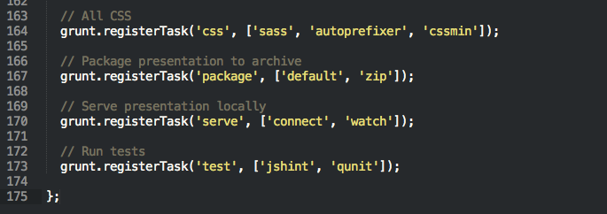

Rocking and Tooling your GeoDev Environment
Gavin Rehkemper & Josh Peterson
Introductions... TODO
“Always code as if the guy who ends up maintaining your code will be a violent psychopath who knows where you live.”
- Martin Golding
Work faster, smarter, and with quality.
"Software Craftsmanship"
Javascript and Python are the
Batman and Robin of geo dev.
Batman and Robin of geo dev.
IDE
Task Automation
Dev Tools
Theme it
Seti UI (file icons, clean interface/colors)
Extend it
ColorHighlighter
Supports SASS variables!
SublimeLinter
JSFormat enhances syntax
GitGutter for repo comparison
Emmet for text expansion
IDE
Task Automation
Dev Tools
npm to install plugins
package.json to manage them
Configure tasks in Gruntfile.js
grunt.registerTask
Chain tasks for common workflows
Use grunt-contrib-watch or run tasks manually
grunt-contrib-connect
start a web server
start a web server
grunt-concurrent
run tasks concurrently
run tasks concurrently
grunt-autoprefixer
add vendor prefixes
add vendor prefixes
grunt-uncss
remove unused CSS
remove unused CSS
grunt-shell
run shell commands
run shell commands
grunt-zip
zip and unzip files
zip and unzip files
IDE
Task Automation
Dev Tools
talk about dev tools...
Thank you!
Please rate this session:
http://www.esri.com/events/session-rater?id=90#18940